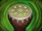
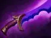

Charge of Darkness
разгоняется к выбранному врагу, преодолевая большие расстояния.

Поддержка — позиция 4
нападать на врагов по всей карте, прерывать перемещения и создавать численное преимущество.
не задерживайся надолго на одной линии. Помогай команде, но используй свободное время для безопасных крипов.
разгоняется к выбранному врагу, преодолевая большие расстояния.
увеличивает скорость передвижения и сопротивление эффектам.
атаки могут оглушать и отталкивать врага.
телепортируется к цели и наносит сильный удар.


